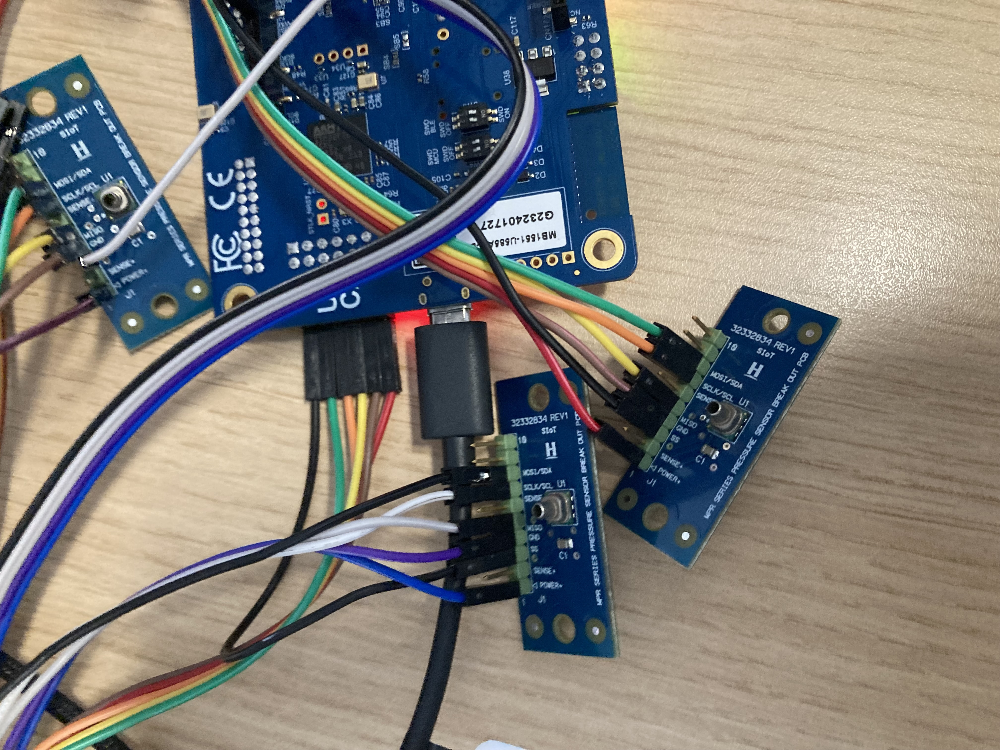
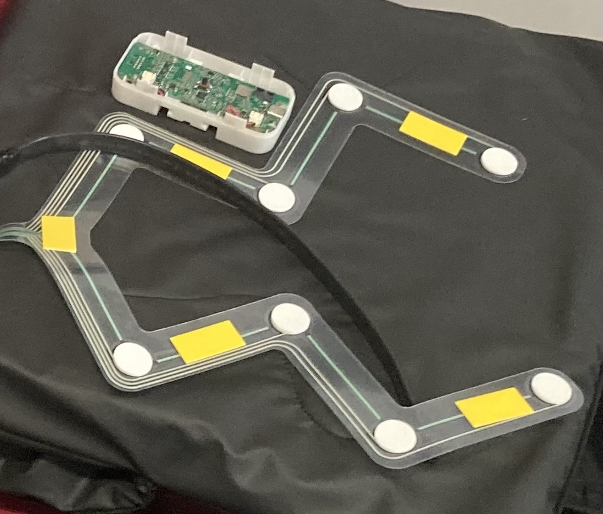

At MoveTrak, we are committed to validating the effectiveness of our technology in various care home environments. Our research aims to ensure that our distributed sensing technology can significantly reduce the incidence of pressure ulcers and improve patient outcomes.
Although real-world testing is ongoing, initial feedback has highlighted a strong demand for the technology in various care settings. Care home staff, residents, and healthcare professionals have expressed confidence in MoveTrak’s potential to enhance self-care and improve caregiving efficiency. Several care homes, through collaborations with ENRICH Cymru and local networks, have shown interest in participating in trials to evaluate the systems impact.
Initial grants were awarded from the ARCH social care hackathon for ideation and proof of concept development, for a pressure ulcer prevention technology.
The project team secured a grant from Welsh Government in 2024 for commercial and technical feasibility development.
Procurement feasibility studies, conducted via the Tri-tech institute in collaboration with Swansea Council and members of the public, have explored cost-effective solutions to ensure accessibility.
A co-production approach is being pursued to develop user interfaces tailored to different care environments, optimising the technology for diverse needs.
The Movetrak Project has achieved significant milestones, including the filing of a provisional patent with support from Swansea University.
Engagement with Key stakeholders, such as health board services and Welsh government agencies, is ongoing to facilitate adoption and scalability.
We are currently conducting trials to validate the effectiveness of MoveTrak in different care home environments. Below are some images from our ongoing research and development.

